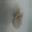

RadialDistortion
Applies barrel or pincushion distortion to simulate lens effects and natural cap curvature variations.



Applies barrel or pincushion distortion to simulate lens effects and natural cap curvature variations.
Applies elastic warping to simulate natural growth variations while preserving mushroom structure.
Selectively zooms on the center region to emphasize the cap-stem junction while maintaining periphery.


Applies subtle changes to height/width ratio to simulate different growth stages.
Divides image into grid cells and randomly shuffles them, forcing the model to focus on local patterns.


Converts image to polar coordinates and applies transformations, effective for circular caps with radial features.
Adds realistic occlusions mimicking forest debris or overlapping mushrooms, more contextually appropriate than random erasing.
Applies smooth non-linear warping to simulate realistic mushroom shape deformations while preserving continuity.